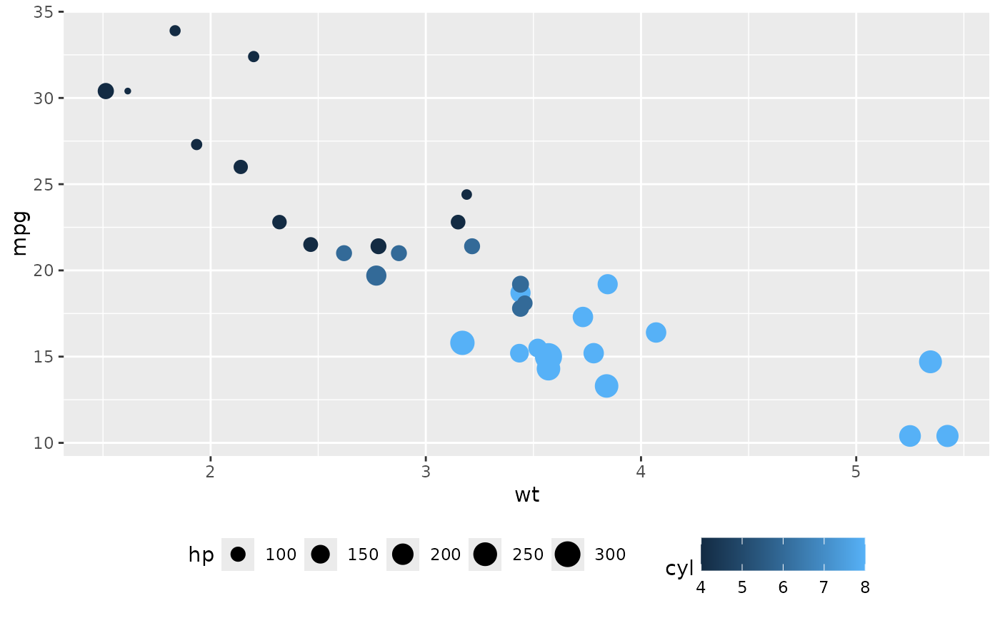
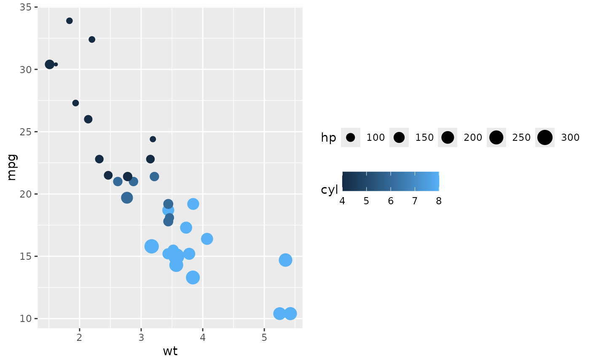
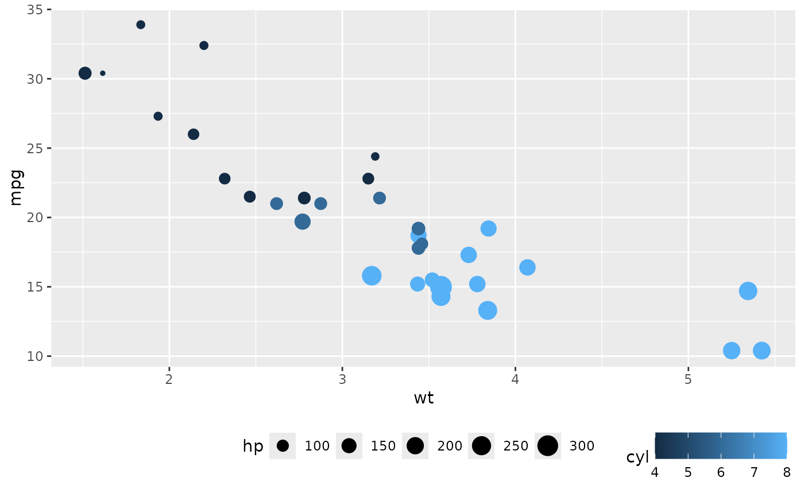

Change legend position, direction, or justification.
easy_change_legend(
what = c("position", "direction", "justification"),
to,
teach = FALSE
)
easy_move_legend(
to = c("right", "none", "left", "bottom", "top"),
teach = FALSE
)
easy_legend_at(to = c("right", "none", "left", "bottom", "top"), teach = FALSE)
easy_rotate_legend(to = c("vertical", "horizontal"), teach = FALSE)
easy_adjust_legend(to = c("left", "right", "center"), teach = FALSE)legend component to modify
("position", "direction", or "justification")
to what to set the legend component should be changed
print longer equivalent ggplot2
expression?
a theme object
Due to limitations of ggplot2 this will apply to all legends at once
library(ggplot2)
# Move legends to bottom
ggplot(mtcars, aes(wt, mpg, colour = cyl, size = hp)) +
geom_point() + easy_move_legend("bottom")

# Make legends horizontal
ggplot(mtcars, aes(wt, mpg, colour = cyl, size = hp)) +
geom_point() + easy_rotate_legend("horizontal")

# Justify legends to the bottom and justify to the right
ggplot(mtcars, aes(wt, mpg, colour = cyl, size = hp)) +
geom_point() +
easy_move_legend("bottom") +
easy_adjust_legend("right")
